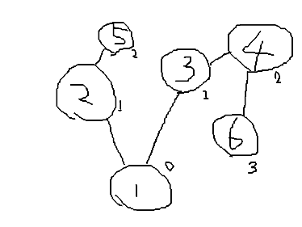
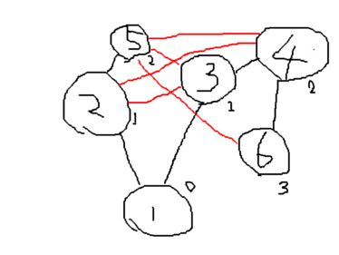

Noya君は無駄なことが好きである。ある日Noya君は無向グラフに無駄な辺を加えたくなった。Noya君はできるだけ多くの無駄な辺を加えたがっている。
Noya君が加えることができる辺の数の最大値を求めよ。ただし、グラフに多重辺や自己ループを加えることを禁止とする。また、無駄な辺とはその辺があっても無くても特定の頂点Aから任意の頂点までに通る辺の最小数が変わらない辺のことを指す。 なお、グラフの頂点には{1,2,3...N}と各々に番号が振り分けられている。
入力はK+1行から成り、1行目には頂点の数N,辺の数K,特定の頂点Aが、2...K+1行目には互いに辺を持つ2頂点がスペース区切りで入力される。
Noya君が加えることができる無駄な辺の数の最大値を出力せよ。
Easy :
N < 10
Normal :
N < 10^3
Hard :
N < 10^6
K < N*(N-1)/2
A <= N
入力
6 5 1 1 2 2 5 1 3 3 4 4 6
出力
5
入力例のグラフは以下の通り

無駄な辺を赤色で加えると

頂点1からの最短距離が変わっていないことがわかる。
準備中...